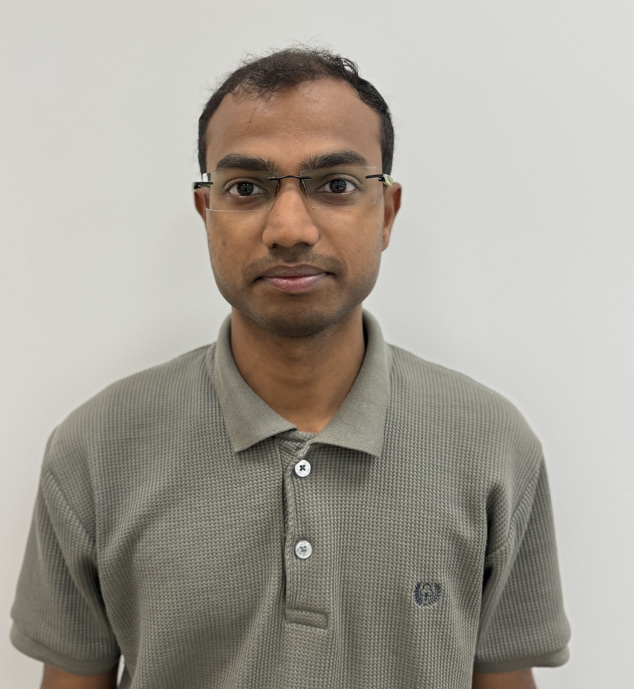
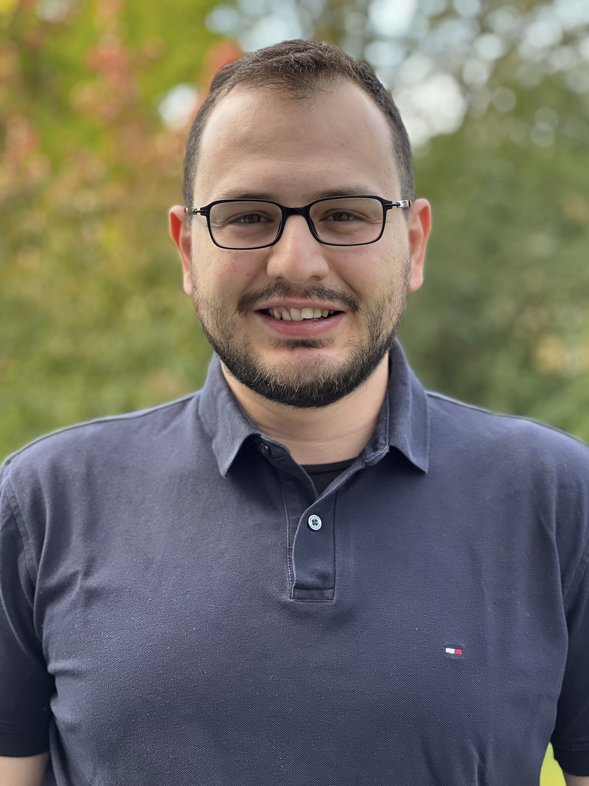

Rishikesh Parma (since 2021)
Rishikesh Parma is a doctoral candidate in Operations Management at the Luxembourg Centre for Logistics and Supply Chain Management (LCL), where he is jointly advised by Prof. Çağıl Koçyiğit and Prof. Benny Mantin. His research interests include mechanism design, revenue management, and optimization. He holds an Integrated Master of Technology in Mathematics and Computing from the Indian Institute of Technology (IIT) Dhanbad (2014–2019).

Nihat Oner (since 2024)
Nihat Oner is a postdoctoral researcher in Operations Management at the Luxembourg Centre for Logistics and Supply Chain Management (LCL). He works with Prof. Çağıl Koçyiğit on data-driven healthcare operations, motivated by the real-life challenges faced by a hospital in Luxembourg. He obtained his Ph.D. in Industrial Engineering from TOBB University of Economics and Technology, where he also received his bachelor’s and master’s degrees. His research interests span network optimization in supply chain management, cost allocation in cooperative logistics, cooperative game theory, machine scheduling, and solving large-scale network problems.